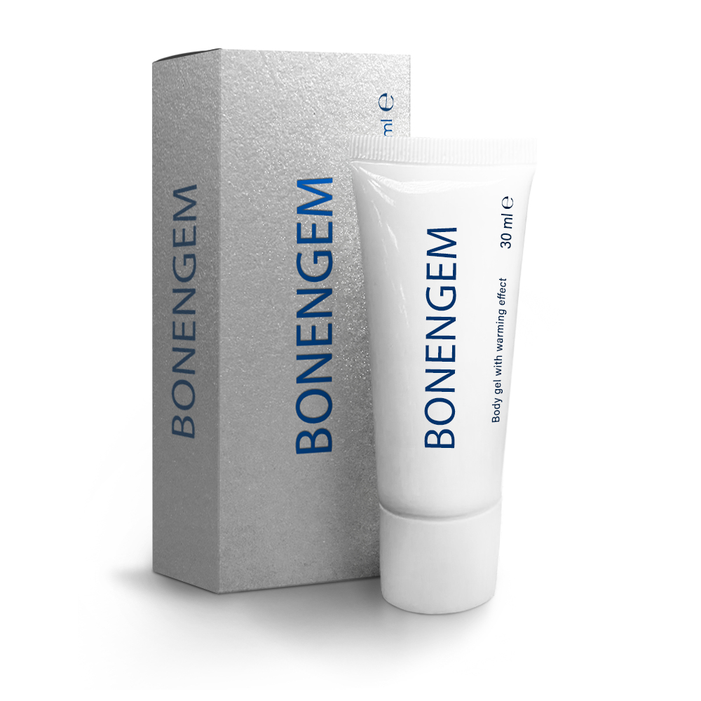
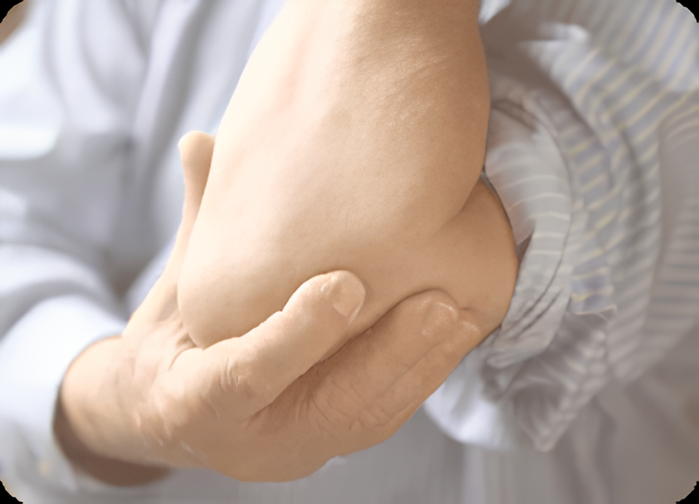
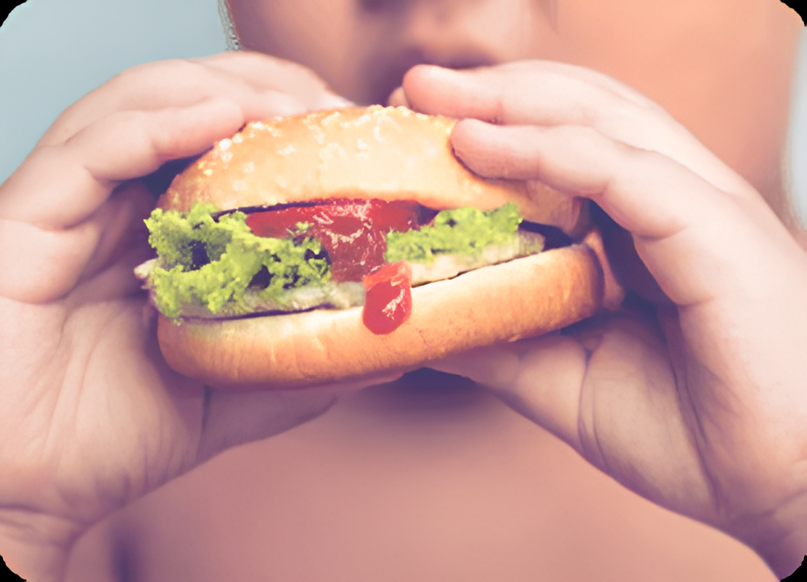
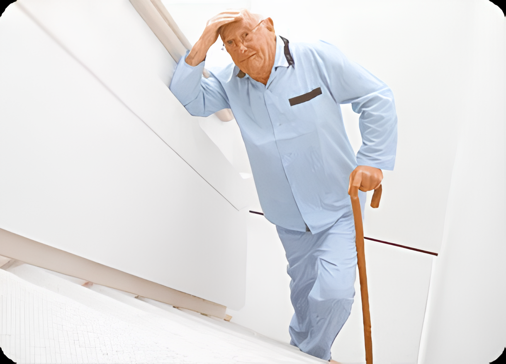
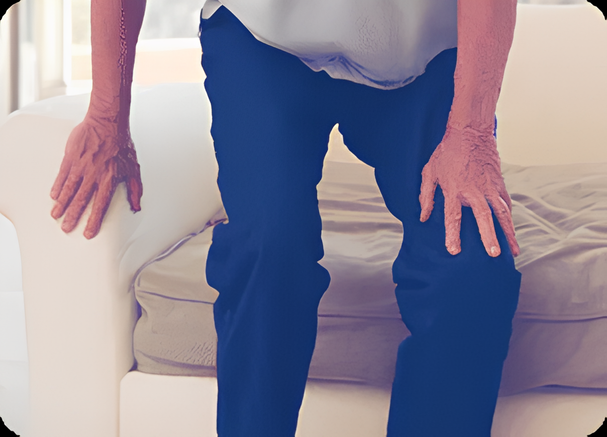
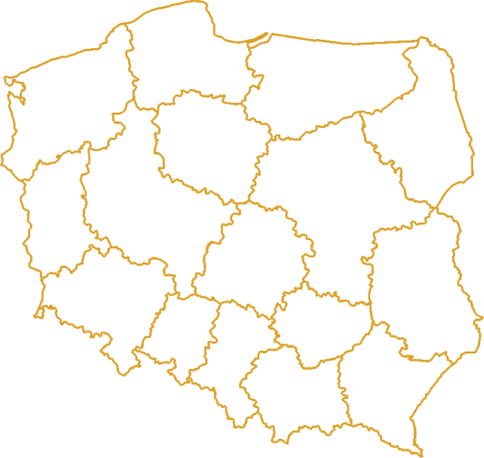
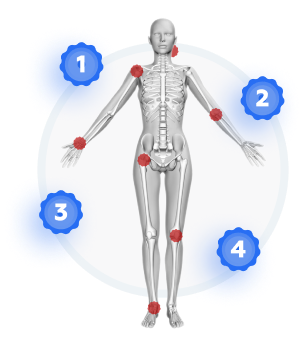

Maść Bonengem
złagodzi ból i przywróci zdrowie Twoich
stawów!
maść walczy z artretyzmem, artrozą i przywraca prawidłową ruchomość stawów.
00
Godzin
22
Minut
32
Sekund

- Eliminuje ból niemał od razu po aplikacji
- Usuwa obrzęk i stany zapalne stawów
- Pomaga przywrócić prawidłową ruchomość stawów
 27
200 PLN
137 PLN
27
200 PLN
137 PLN
BONENGEM TO ROZWIĄZANIE WIĘKSZOŚCI PROBLEMÓW ZE STAWAMI!
Zaleca się użycie maść Bonengem


Podczas zapalenia oraz infekcji
stawów
Сelem eliminacji zespołu bólowego i
przywrócenia prawidłowych funkcji
stawów

Z wiekiem
Сelem eliminacji zespołu bólowego i
przywrócenia prawidłowych funkcji
stawów


Podczas urazów stawów
Сelem eliminacji zespołu bólowego i
przywrócenia prawidłowych funkcji
stawów


Podczas nieprawidłowego odżywiania oraz
otyłości
Celem regeneracji mechanicznego zużycia,
dystrofii oraz deformacji stawów i
chrząstek


Podczas zwiększonego obciążenia
stawów
Przy wszelkiego rodzaju powtarzających się
obciążeniach lub dla osób z nadwagą


Podczas siedzącego trybu życia
Сelem zapobiegania oraz regeneracji zmian
w stawach
4 ETAPY ROZWOJU CHORÓB STAWÓW

Dyskomfort i bolesne odczucia
Lekka sztywność ruchów i dyskomfort, okresowe, nocne bolesne odczucia, bóle i uczucie skręcania stawów przy zmianie pogody.

NASTĄPIENIE
PROCESÓW PATOLOGICZNYCH
Obrzęk i zaczerwienienie jednego lub kilku stawów, oczywisty dyskomfort, się się nieprzyjemnych odczuć na wrzenie pogody, stawy nieprzyjemnie chrzęszczą.

DEFORMACJA STAWÓW Z
POWODU OBCIĄŻEŃ
Movements are limited and cause pain, pain, pain stawów nawet w spoczynku. Treatment is only possible with the help of wykluczenia large obciążeń and use of harmful drugs. The disease can last for months or years.

DEFORMACJA STAWÓW Z POWODU
OBCIĄŻEŃ
Movements are limited and cause pain, pain, pain stawów nawet w spoczynku. Treatment is only possible with the help of wykluczenia large obciążeń and use of harmful drugs. The disease can last for months or years.
1
2
3
4
Dyskomfort i bolesne odczucia
Lekka sztywność ruchów i dyskomfort, okresowe, nocne bolesne odczucia, bóle i uczucie skręcania stawów przy zmianie pogody.
NASTĄPIENIE
PROCESÓW PATOLOGICZNYCH
Obrzęk i zaczerwienienie jednego lub kilku stawów, oczywisty dyskomfort, się się nieprzyjemnych odczuć na wrzenie pogody, stawy nieprzyjemnie chrzęszczą.
DEFORMACJA
STAWÓW Z
POWODU OBCIĄŻEŃ
Movements are limited and cause pain, pain, pain stawów nawet w spoczynku. Treatment is only possible with the help of wykluczenia large obciążeń and use of harmful drugs. The disease can last for months or years.
DEFORMACJA STAWÓW Z POWODU
OBCIĄŻEŃ
Movements are limited and cause pain, pain, pain stawów nawet w spoczynku. Treatment is only possible with the help of wykluczenia large obciążeń and use of harmful drugs. The disease can last for months or years.

Maść Bonengem
złagodzi ból i przywróci zdrowie
Twoich
stawów!
00
Godzin
22
Minut
32
Sekund
200 PLN
137 PLN
Fakty potwierdzające skuteczność maść
Bonengem

Poprawa stanu stawów jest
zauważalna u
92% pacjentów
Badanie wykazało, iż wśród 1200 osób cierpiących na problemy ze stawami, poprawa wystąpiła u 92% badanych.

Gojenie oraz regeneracja
następują o
40% szybciej
Według przeprowadzonych badań, opatentowana formuła Bonengem skraca czas odbudowy stawów i tkanki chrzęstnej o 40%.

Dwa najsilniejsze składniki
maść
Zapewniają jego niezrównany efekt, a także całkowicie naturalny skład środka Bonengem.
Jak stosować maść Bonengem ?

Zapewniają jego niezrównany efekt, a także całkowicie naturalny skład środka Bonengem .

Wmasować maść aż do całkowitego wchłonięcia

Powtarzać tę procedurę trzy razy dziennie podczas całej kuracji
Doświadczony ekspert w dziedzinie reumatologii potwierdza wysoką skuteczność maść Bonengem
Nie należy zaniedbać tej choroby! Od wielu lat polecam moim pacjentom walkę z problemami stawów przy pomocy prawidłowego leczenia oraz profilaktyki. Stosowanie maść Bonengem nie dopuszcza do odkształcania i zniszczenia stawów, co uchroni przed ewentualną niepełnosprawnością.
Bonengem to nowy, sprawdzony środek, który łagodzi stany zapalne, odbudowuje stawy i zapobiega występowaniu powikłań.
Daść Bonengem jest całkowicie naturalny i bezpieczny!
Bartosz Sobczuk
Doświadczony eksperta w dziedzinie reumatologii, specjalista z ponad 36-letnim doświadczeniem zawodowym.

4 rady od Pana Bartosza Sobczuka
Warunki dla zachowania zdrowia stawów PRZED , PODCZAS oraz PO użyciu Bonengem
Aktywny tryb życia
Rozsądne obciążenia pomogą poprawić odżywianie stawów i zapobiegną ich chorobom. Ważne jest również wzmocnienie mięśni otaczających bolesny staw.

Leczenie na czas
Choroby stawów z czasem pogłębiają się i rozprzestrzeniają się na sąsiednie stawy. 50% pacjentów, którzy nie leczą reumatoidalnego zapalenia stawów, w następstwie, już po 5 latach, doświadczają straszne powikłania.

Pozbycie się złych nawyków
Nie tylko palenie jest szkodliwym nałogiem podczas chorób stawów. Ważne jest również zaprzestanie garbienia się. Ponadto głowa powinna być położona nie dalej niż 50 cm od monitora. Siedząc warto także pamiętać o kładzeniu nogi na nogę.

Kontrola odżywiania
Aby przeciwdziałać mechanicznemu zużyciu się stawów, konieczne jest kontrolowanie swojej wagi. Na przykład, gdy osoba waży 120 kg, wówczas na każde 1 cm2 łąkotki jest kładziony nacisk równy 8,3 kg – prawie 2 razy większy niż dopuszczalna norma.


Bonengem
to nie tylko środek przeciwbólowy,
ale
kompleksowe narzędzie przywracające
zdrowie
stawów
00
Godzin
22
Minut
32
Sekund
200 PLN
137 PLN
Składniki maść Bonengem


Naturalne olejki
eteryczne
Mentol, limonen i inne łagodzą stany zapalne oraz ból.

Biologicznie aktywne
składniki
Kasztanowiec oraz ekstrakt z lawendy łagodzą swędzenie i zmniejszają obrzęk, oczyszczają stawy z osadów soli.

Dodatkowe składniki
Wspomagają odbudowę stawów i kości.
Co mówią ci, którzy już stosują Bonengem
Dostarczymy Twoje zamówienie do dowolnego
miasta w
Polsce w ciągu zaledwie 2 dni!

Gdańsk
Olsztyn
Bialystok
Warszawa
Kielce
Łódź
Lublin
Rzeszow
Kraków
Katowice
Opole
Wrocław
Zielona
Góra
Góra
Gorzovwielkopolski
Szczecin
Poznań
Bydgoszcz
Zamówienie oryginalnego środka Bonengem
jest
możliwe wyłącznie na naszej stronie
internetowej

Wypełnij
formularz na stronie internetowej
i poczekaj na telefon
operatora
Potwierdź
zamówienie podczas rozmowy z
operatorem
W ciągu 2 dni
otrzymasz Bonengem

Bonengem
to naturalny sposób na zdrowe stawy
00
Godzin
22
Minut
32
Sekund
200 PLN
137 PLN
maść walczy z artretyzmem, artrozą i przywraca prawidłową ruchomość stawów.
 27
27
Liczba promocyjnych opakowań jest ograniczona i wynosi
- Eliminuje ból niemał od razu po aplikacji
- Usuwa obrzęk i stany zapalne stawów
- Pomaga przywrócić prawidłową ruchomość stawów
00
Godzin
22
Minut
32
Sekund
200 PLN
137 PLN
BONENGEM TO ROZWIĄZANIE WIĘKSZOŚCI PROBLEMÓW ZE STAWAMI!
Podczas zapalenia oraz infekcji stawów
Сelem eliminacji zespołu bólowego i przywrócenia prawidłowych funkcji stawów
Z wiekiem
Сelem eliminacji zespołu bólowego i przywrócenia prawidłowych funkcji stawów
Podczas urazów stawów
Сelem eliminacji zespołu bólowego i przywrócenia prawidłowych funkcji stawów
Podczas nieprawidłowego odżywiania oraz otyłości
Celem regeneracji mechanicznego zużycia, dystrofii oraz deformacji stawów i chrząstek
Podczas zwiększonego obciążenia stawów
Przy wszelkiego rodzaju powtarzających się obciążeniach lub dla osób z nadwagą
Podczas siedzącego trybu życia
Сelem zapobiegania oraz regeneracji zmian w stawach

Dyskomfort i bolesne odczucia
Lekka sztywność ruchów i dyskomfort, okresowe, nocne bolesne odczucia, bóle i uczucie skręcania stawów przy zmianie pogody
NASTĄPIENIE PROCESÓW PATOLOGICZNYCH
Obrzęk i zaczerwienienie jednego lub kilku stawów, oczywisty dyskomfort, się się nieprzyjemnych odczuć na wrzenie pogody, stawy nieprzyjemnie chrzęszczą.
DEFORMACJA STAWÓW Z POWODU OBCIĄŻEŃ
Movements are limited and cause pain, pain, pain stawów nawet w spoczynku. Treatment is only possible with the help of wykluczenia large obciążeń and use of harmful drugs. The disease can last for months or years.
DEFORMACJA STAWÓW Z POWODU OBCIĄŻEŃ
Movements are limited and cause pain, pain, pain stawów nawet w spoczynku. Treatment is only possible with the help of wykluczenia large obciążeń and use of harmful drugs. The disease can last for months or years.

00
Godzin
22
Minut
32
Sekund
200 PLN
137 PLN
Pospiesz się i złóż zamówienie z %
zniżką
Konsultant oddzwoni do Ciebie w
ciągu 5 minut
Twoje dane nie zostaną przekazane
osobom trzecim!
Sprawdź koszt dostawy u
operatora
Poprawa stanu stawów jest zauważalna u 92% pacjentów
Badanie wykazało, iż wśród 1200 osób cierpiących na problemy ze stawami, poprawa wystąpiła u 92% badanych.

Dwa najsilniejsze składniki maść
Zapewniają jego niezrównany efekt, a także całkowicie naturalny skład środka Bonengem .
Gojenie oraz regeneracja następują o 40% szybciej
Według przeprowadzonych badań, opatentowana formuła Bonengem skraca czas odbudowy stawów i tkanki chrzęstnej o 40%.
Zapewniają jego niezrównany efekt, a także całkowicie naturalny skład środka Bonengem .
Wmasować maść aż do całkowitego wchłonięcia
Powtarzać tę procedurę trzy razy dziennie podczas całej kuracji
4 rady od Pana Bartosza Sobczuka
Warunki dla zachowania zdrowia stawów PRZED , PODCZAS oraz PO użyciu Bonengem
Aktywny tryb życia
Rozsądne obciążenia pomogą poprawić odżywianie stawów i zapobiegną ich chorobom. Ważne jest również wzmocnienie mięśni otaczających bolesny staw.
Leczenie na czas
Choroby stawów z czasem pogłębiają się i rozprzestrzeniają się na sąsiednie stawy. 50% pacjentów, którzy nie leczą reumatoidalnego zapalenia stawów, w następstwie, już po 5 latach, doświadczają straszne powikłania.
Kontrola odżywiania
Aby przeciwdziałać mechanicznemu zużyciu się stawów, konieczne jest kontrolowanie swojej wagi. Na przykład, gdy osoba waży 120 kg, wówczas na każde 1 cm2 łąkotki jest kładziony nacisk równy 8,3 kg – prawie 2 razy większy niż dopuszczalna norma.
Pozbycie się złych nawyków
Nie tylko palenie jest szkodliwym nałogiem podczas chorób stawów. Ważne jest również zaprzestanie garbienia się. Ponadto głowa powinna być położona nie dalej niż 50 cm od monitora. Siedząc warto także pamiętać o kładzeniu nogi na nogę.
00
Godzin
22
Minut
32
Sekund
200 PLN
137 PLN
Biologicznie aktywne składniki
Kasztanowiec oraz ekstrakt z lawendy łagodzą swędzenie i zmniejszają obrzęk, oczyszczają stawy z osadów soli.
Naturalne olejki eteryczne
Mentol, limonen i inne łagodzą stany zapalne oraz ból.
Dodatkowe składniki
Wspomagają odbudowę stawów i kości.
 Magdalena, 49 lata
Magdalena, 49 lata
 Anna, 56 lat
Anna, 56 lat
 Piotr, 52 lata
Piotr, 52 lata

Wypełnij formularz na stronie internetowej i poczekaj na telefon operatora
Potwierdź zamówienie podczas rozmowy z operatorem
W ciągu 2 dni otrzymasz Bonengem
00
Godzin
22
Minut
32
Sekund
200 PLN
137 PLN
Natychmiast poszedłem do szatni i posmarowałem bolące miejsca. Za kilka dni zacząłem chodzić w dość normalnym tempie. Po kuracji nie było nawet śladu zapalenia. Sam zamówiłem Bonengem , aby zawsze mieć go pod ręką.